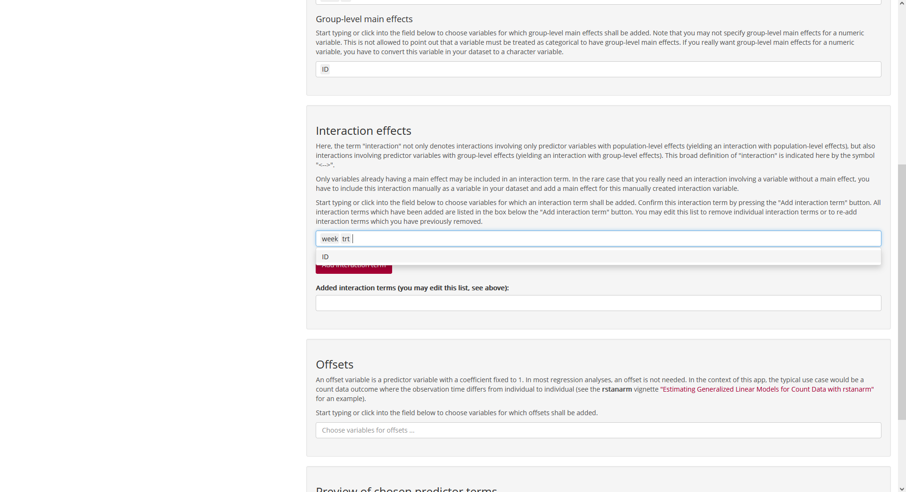
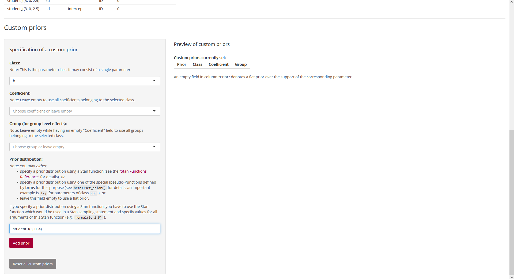
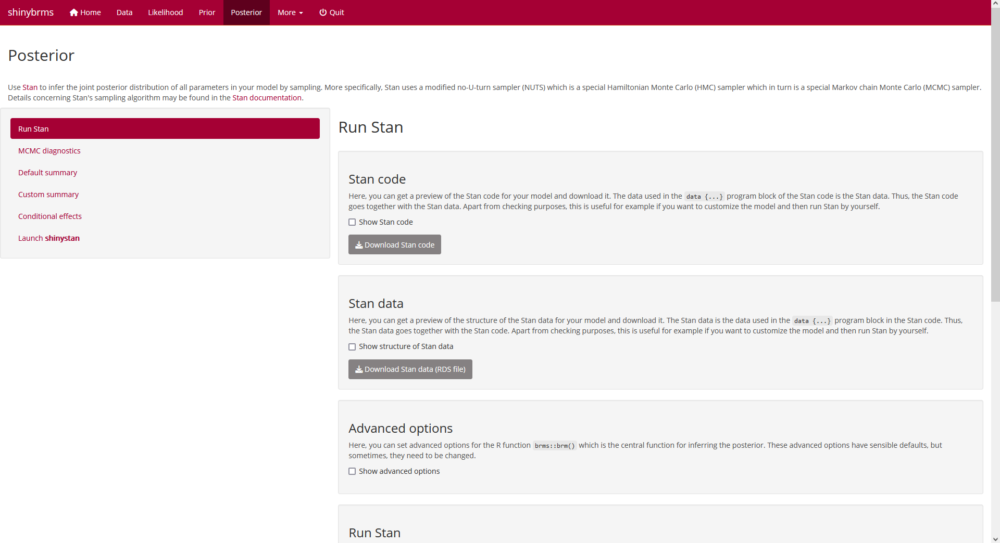
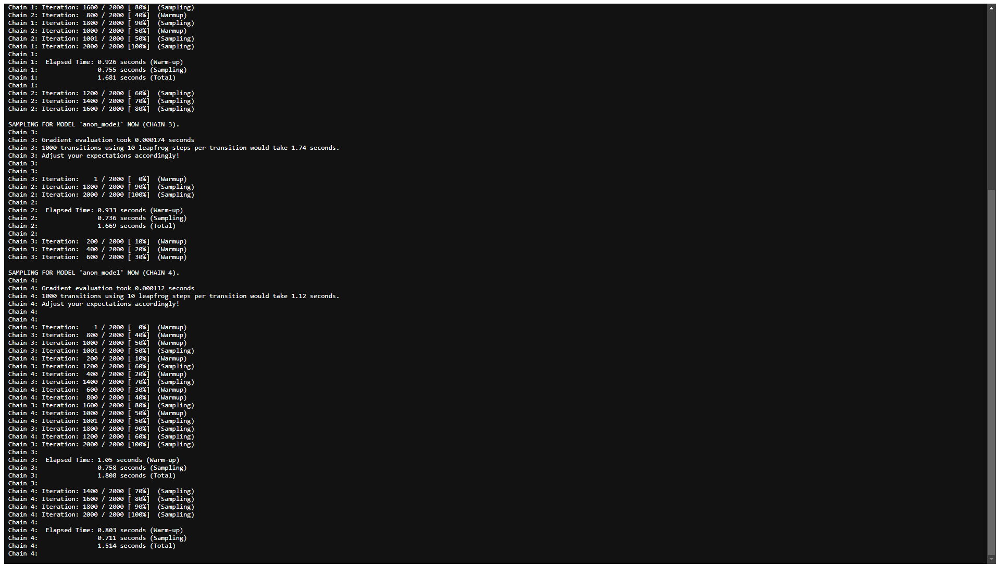
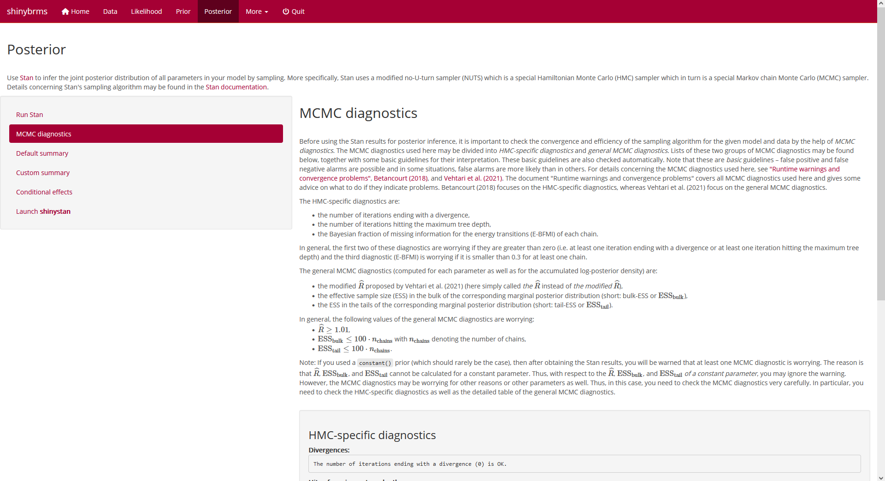
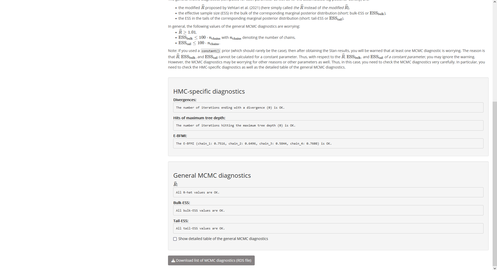
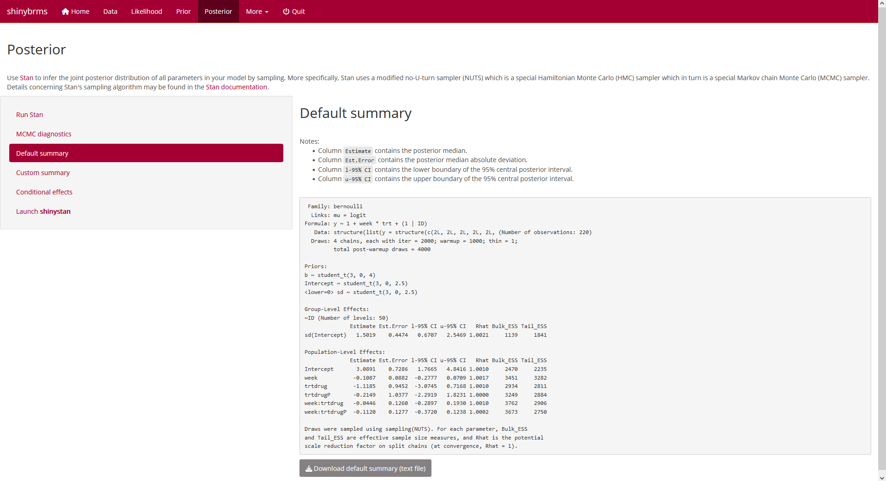
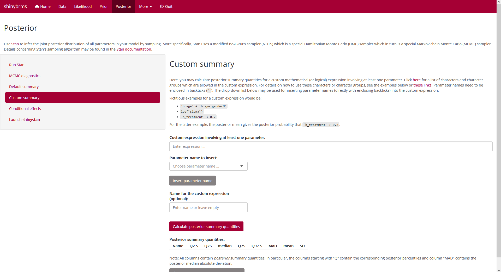
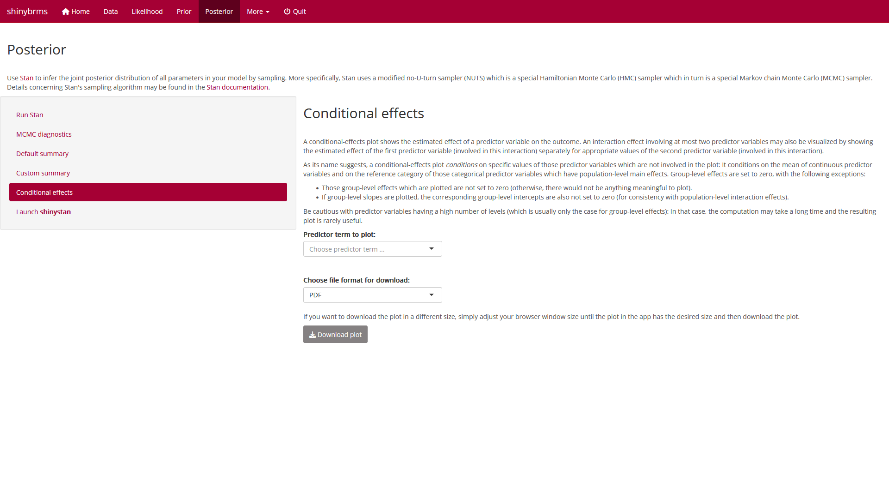
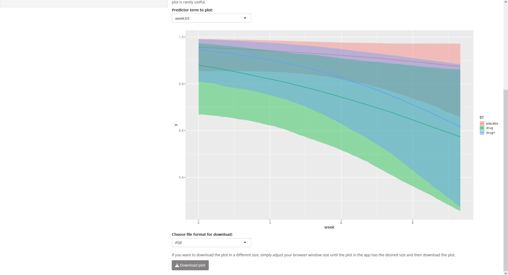

The following screenshots illustrate how to fit a model in the shinybrms app. For instructions on how to launch the shinybrms app, see the starting page.
{kind=link}
Data
We then switch to page “Data”. Usually, there is a custom dataset to be
uploaded, but for the purpose of demonstration, we will choose the
example dataset MASS::bacteria here:
 Fig. 2: Page “Data” (top).
Fig. 2: Page “Data” (top).
Further down on page “Data”, we may choose, for example, to show all
rows of the dataset:
 Fig. 3: Page “Data”
(further down when showing all rows of the dataset).
Fig. 3: Page “Data”
(further down when showing all rows of the dataset).
Likelihood
Outcome
On page “Likelihood”, the first tab is called “Outcome”. Here, we define
variable y (from our dataset MASS::bacteria)
to be the outcome and since this is a binary outcome, we choose the
distributional family “Bernoulli”:
 Fig. 4: Page
“Likelihood”, tab “Outcome”.
Fig. 4: Page
“Likelihood”, tab “Outcome”.
Predictors
After selecting tab “Predictors”, we set up (population-level) main
effects for variables week and trt and
group-level main effects (i.e., group-level intercepts) for variable
ID:
 Fig. 5: Page
“Likelihood”, tab “Predictors” (top).
Fig. 5: Page
“Likelihood”, tab “Predictors” (top).
After scrolling down, we set up a (population-level) interaction term
for week and trt:
 Fig. 6: Page
“Likelihood”, tab “Predictors” (bottom; setting up the interaction
effect).
{kind=link}
After clicking on “Add interaction term”, we get:
 Fig. 7: Page
“Likelihood”, tab “Predictors” (bottom; after adding the interaction
effect).
Fig. 7: Page
“Likelihood”, tab “Predictors” (bottom; after adding the interaction
effect).
Prior
Default priors
At the top of page “Prior”, we obtain a table with the default priors
for the model we have specified so far:
 Fig. 8: Page “Prior”
(top).
Fig. 8: Page “Prior”
(top).
Custom priors
At the bottom of page “Prior”, we can specify custom priors. Here, we
use a
Student-
prior distribution with 3 degrees of freedom, a location parameter of 0,
and a scale parameter of 4 for all regression coefficients (parameter
class b):
 Fig. 9: Page “Prior”
(bottom; setting up a custom prior).
{kind=link}
After clicking on “Add prior”, we see that our
Student-
prior was added to the preview table on the right:
 Fig. 10: Page “Prior”
(bottom; after adding a custom prior).
Fig. 10: Page “Prior”
(bottom; after adding a custom prior).
Posterior
Run Stan
On page “Posterior”, the first tab is called “Run Stan”. At the top of
this tab, we could get a preview of the Stan code and the Stan data (and
download them):
 Fig. 11: Page
“Posterior”, tab “Run Stan” (top).
{kind=link}
Here, we focus on panel “Advanced options” where we set a seed for
reproducibility (and where we also choose 4 cores to use parallel
computation):
 Fig. 12: Page
“Posterior”, tab “Run Stan”, panel “Advanced options”.
Fig. 12: Page
“Posterior”, tab “Run Stan”, panel “Advanced options”.
Next, we head over to the fundamental part of our analysis, the
inference of the posterior distribution of all parameters. Since we have
everything prepared now, this is accomplished quite easily: Right below
panel “Advanced options”, we find panel “Run Stan” where we simply click
the button for running Stan:
 Fig. 13: Page
“Posterior”, tab “Run Stan”, panel “Run Stan”.
Fig. 13: Page
“Posterior”, tab “Run Stan”, panel “Run Stan”.
Now Stan starts compiling the C++ code for our model and after having
finished the compilation, Stan automatically starts sampling. As we have
not changed the default for advanced option “Open progress”, a file will
automatically open up (in a new browser tab) after completion of the
compilation. This file shows the sampling progress:
 Fig. 14: Sampling
progress (top).
Fig. 14: Sampling
progress (top).
Depending on the model and the data, sampling might take a while. For
the example here, sampling proceeds quite fast. Note that the progress
file needs to be refreshed manually (by refreshing the corresponding
browser tab). When Stan has finished sampling, the bottom of the
progress file looks something like this:
 Fig. 15: Sampling
progress (bottom; after completion of sampling).
{kind=link}
We can now switch back to the browser tab where
shinybrms is running. Most importantly, we get the
result of an “overall check” of the Markov chain Monte Carlo (MCMC)
diagnostics which are given in detail on tab “MCMC diagnostics”. Here,
all MCMC diagnostics are OK:
Fig. 16: Page
“Posterior”, tab “Run Stan”, panel “Run Stan” (after completion of the
Stan run).
{kind=link}
MCMC diagnostics (details)
Tab “MCMC diagnostics” first shows a description which MCMC diagnostics
are checked here:
 Fig. 17: Page
“Posterior”, tab “MCMC diagnostics” (top).
{kind=link}
Underneath this description, the diagnostic results for the given Stan
run are shown; first the diagnostics specific to Hamiltonian Monte Carlo
(HMC) and then the general MCMC diagnostics:
 Fig. 18:
Page “Posterior”, tab “MCMC diagnostics” (bottom).
{kind=link}
For the general MCMC diagnostics (which are computed for each parameter
as well as for the accumulated log posterior density), it is also
possible to show a detailed table:
 Fig. 19: Page “Posterior”, tab “MCMC diagnostics”, top of the
detailed table of the general MCMC diagnostics.
Fig. 19: Page “Posterior”, tab “MCMC diagnostics”, top of the
detailed table of the general MCMC diagnostics.
Default summary
Since all MCMC diagnostics look good, we may start interpreting the
posterior. On tab “Default summary”, we get a short summary of our Stan
run, including the median (column Estimate), the median
absolute deviation (column Est.Error), and the 2.5 % and
97.5 % quantiles (columns l-95% CI and
u-95% CI, respectively) of the marginal posterior
distribution of the most important parameters:
 Fig. 20: Page
“Posterior”, tab “Default summary”.
{kind=link}
Custom summary
The purpose of tab “Custom summary” is explained in the help text of
that tab:
 Fig. 21: Page
“Posterior”, tab “Custom summary” (top).
{kind=link}
Here, it makes sense to calculate posterior summary quantities for the
trt-specific week effects which are given by
the sum of the main effect of week and the interaction
effect with the corresponding trt value (except for the
reference level of trt where this interaction effect does
not exist):
Fig. 22:
Page “Posterior”, tab “Custom summary” (bottom; showing a custom summary
for the week:trt effects).
{kind=link}
Conditional effects
The purpose of tab “Conditional effects” is explained in the help text
of that tab:
 Fig. 23: Page
“Posterior”, tab “Conditional effects” (top).
{kind=link}
Here, it makes sense to plot the conditional effects for the
week:trt interaction:
 Fig. 24: Page
“Posterior”, tab “Conditional effects” (bottom; showing the plot for
week:trt).
{kind=link}
Launch shinystan
The output shown on tab “Default summary” is only intended for a quick
inspection. A much more comprehensive analysis of the output is possible
using the shiny app from shinystan
which also offers posterior predictive checks as well as more details
concerning the MCMC diagnostics. We launch the
shinystan app by clicking the corresponding button on
tab “Launch shinystan” (after having entered a seed for
the reproducibility of the posterior predictive checks):
Fig. 25: Page
“Posterior”, tab “Launch shinystan”.
{kind=link}
At this point, the shinybrms workflow ends and passes
over to shinystan.